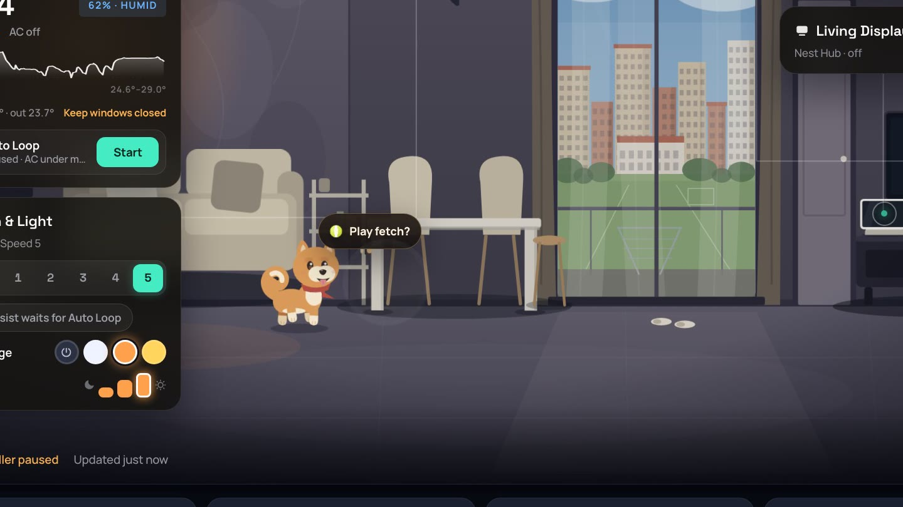

my smart home dashboard
Mugi's House
The fan, lights and aircon in my apartment are real. The dog isn't. These are my notes on how it all fits together.
-

Meet Mugi: the shiba who lives in my smart home dashboard
What it controls, remotes drawn like the real ones, how it's built (FastAPI on a Mac mini, Next.js, Nest Hubs as kiosks), Mugi's brain, a PI climate loop that only has a remote, and lessons learned.